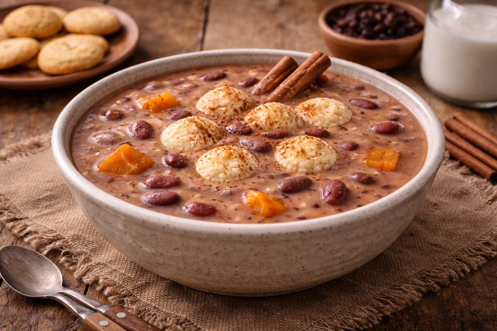
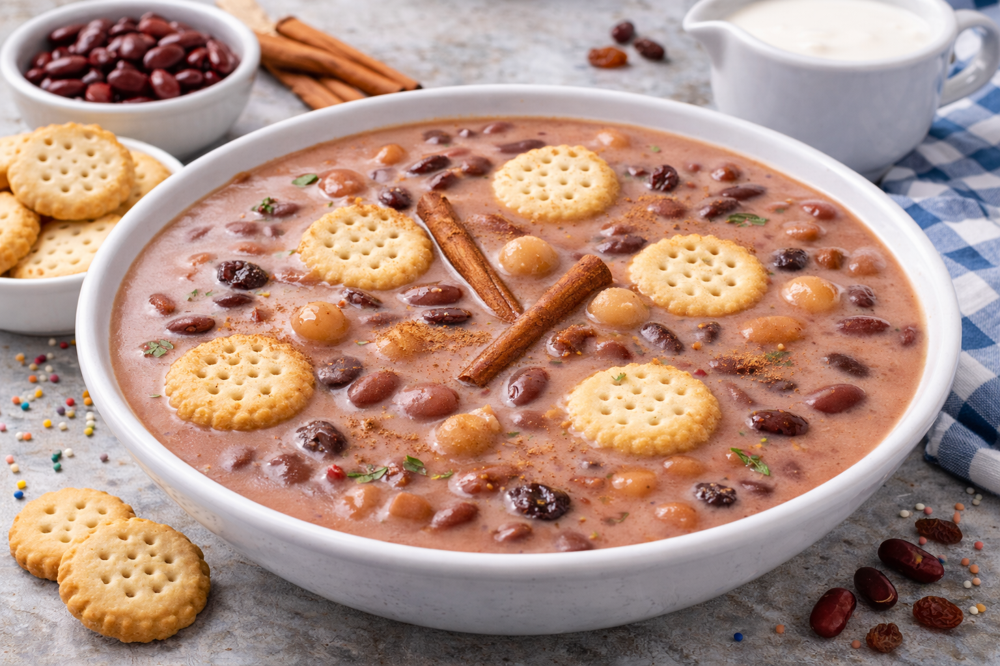

Main Page
Sweet Beans Recipe

Description
Habichuelas con Dulce (Sweet Beans) is a traditional Dominican dessert made especially during Lent
and Easter. Despite sounding unusual, it’s a rich, creamy, spiced sweet stew made from red beans
blended with coconut milk, evaporated milk, sugar, sweet potatoes, and warm spices. It’s served
chilled or warm and topped with small milk cookies. This dish is deeply rooted in Dominican culture
and is often shared with neighbors and family during the season.
Ingredients
- 2 cups cooked red beans (or 1 can, drained)
- 1 can evaporated milk
- 1 can coconut milk
- 1 cup sugar
- 1 cinnamon stick
- 3 cloves
- ¼ teaspoon nutmeg
- 1 teaspoon vanilla extract
- 1 cup cooked sweet potato, cubed
- ¼ cup raisins
- 1 pinch salt
- Small milk cookies (for serving)
Steps
- Blend the cooked red beans with about 1 cup of water until completely smooth.
- Strain the blended beans into a large pot to remove any skins.
- Add evaporated milk and coconut milk to the pot and stir well.
- Add sugar, cinnamon stick, cloves, nutmeg, salt, and vanilla.
- Bring to a gentle simmer over medium-low heat, stirring frequently.
- Cook for about 15–20 minutes until slightly thickened.
- Add the cooked sweet potato cubes and raisins.
- Continue simmering for another 5–10 minutes until creamy and well blended.
- Remove the cinnamon stick and cloves.
- Let cool slightly and serve warm, or refrigerate and serve chilled.
- Top with milk cookies before serving.

Main Page